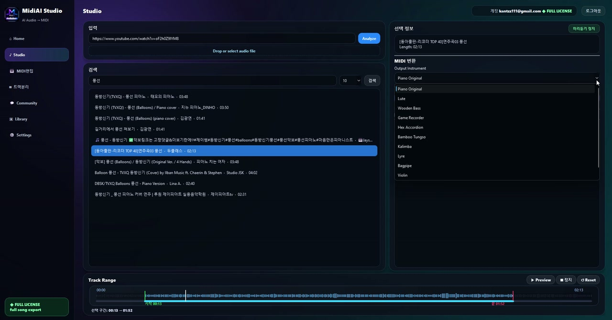

Guide · Tool selection
MIDI Conversion Software for Windows Users
Windows is the most widely-used platform for music production, and it brings its own particular considerations to MIDI conversion — from audio driver setup to file handling to integration with the DAWs Windows musicians favor. Getting these right makes conversion smoother and more reliable.
Much advice about conversion is platform-agnostic, but the practical details of running conversion software well on Windows deserve their own attention. A little setup — the right audio drivers, sensible file organization, good integration — pays off in every conversion you do.
This guide is aimed at Windows users specifically, covering how to choose and set up conversion software like MidiAI Studio on the platform. The focus is on the concrete, Windows-flavored details that turn a working setup into a genuinely good one.

What Windows brings to MIDI conversion
MIDI converter software on Windows is any application that runs on the Windows operating system to convert audio or scores into MIDI. Choosing and configuring it well involves platform-specific considerations around audio drivers, file handling, and integration with the Windows music ecosystem.
The defining Windows factor is its flexible, hardware-diverse environment, which offers broad compatibility and performance but rewards proper setup of audio and system resources.
Audio drivers and low-latency setup
Audio setup is the first Windows-specific concern, because the platform's default audio path is not optimized for music work. Installing appropriate audio drivers — commonly a low-latency driver standard used by music software — ensures responsive playback and monitoring, which matters when auditioning conversions, and MidiAI Studio benefits like any music app from a properly configured audio system.
File handling and organization follow Windows conventions, and a little discipline goes a long way. Keeping source audio, scores, and converted MIDI in a sensible folder structure, and understanding how Windows handles the common audio formats you will convert, keeps a growing library navigable rather than scattered across the drive.
Integration and resources complete the picture. Windows hosts most major DAWs, so choosing conversion software that fits smoothly into your Windows production chain — exporting formats your DAW imports cleanly — streamlines the workflow, while ensuring adequate system resources keeps performance strong during conversion, especially for larger files or batches.
File handling and organization on Windows
Setting up a Windows laptop for smooth conversion
Imagine setting up a Windows laptop for regular MIDI conversion work. Out of the box, playback feels laggy and files are landing haphazardly in the Downloads folder — a workable but rough starting point.
You install a low-latency audio driver so playback and monitoring become responsive, create a clear folder structure separating source recordings from converted MIDI, and confirm your conversion software exports formats your Windows DAW imports cleanly. You check that the laptop has enough free resources for smooth processing.
After this modest setup, the workflow transforms: conversions in MidiAI Studio play back crisply, results land where you expect, and they drop straight into your DAW. The same laptop that felt rough is now a smooth conversion station, thanks to a bit of Windows-specific configuration.

Integration with Windows DAWs and tools
- Set up proper audio drivers. Install a low-latency audio driver suited to music software for responsive playback and monitoring. Windows' default audio path is not optimized for music, so this step noticeably improves the experience.
- Organize your files sensibly. Create a clear folder structure separating source audio, scores, and converted MIDI. Good organization keeps a growing conversion library navigable on Windows.
- Confirm DAW integration. Check that your conversion software exports formats your Windows DAW imports cleanly. Smooth integration keeps converted MIDI flowing into production without friction.
- Ensure adequate system resources. Verify your machine has enough free resources for conversion, especially for large files or batches. Sufficient headroom keeps performance strong and stable.
- Keep software updated and reliable. Install updates and maintain a stable setup. A reliable, current installation avoids the disruptions that derail a conversion workflow.
System resources and performance
- Install a low-latency audio driver for responsive music playback.
- Maintain a clear, consistent folder structure for conversion files.
- Choose software that integrates cleanly with your Windows DAW.
- Keep enough free system resources for smooth processing.
- Stay current with updates for reliability.
Installation, updates, and reliability
- Using default Windows audio: The unoptimized default path causes laggy playback that hampers auditioning conversions.
- Letting files scatter: Haphazard file placement turns a growing library into a disorganized mess.
- Ignoring DAW format fit: Software that exports formats your DAW struggles with adds needless friction.
- Running short on resources: Inadequate headroom causes sluggish or unstable performance during conversion.
- Neglecting updates: An outdated, unmaintained setup invites the instability that disrupts workflows.
Working with common Windows audio formats
Windows rewards setup in a way that reflects its core strength and weakness: flexibility. Because it runs on enormously diverse hardware and serves many purposes, it does not arrive pre-tuned for music the way a dedicated appliance would, which means a modest amount of configuration unlocks a large improvement. The platform meets you where you invest in it.
The audio driver point is worth emphasizing because it is the setup step with the highest payoff and the most commonly skipped. Latency is invisible until you try to monitor or audition in real time, at which point it becomes maddening, and the fix is a one-time driver installation. Getting this right early makes every subsequent conversion session in MidiAI Studio feel professional rather than sluggish.
Setting up a smooth Windows conversion workflow
Organization discipline matters more on Windows precisely because the system gives you so much freedom to be disorganized. Files can go anywhere, and without a structure they will, so imposing a sensible folder layout is a small act of foresight that keeps a conversion practice manageable as it grows. The habit costs minutes and saves hours of hunting.
The integration mindset is what turns conversion from an isolated task into part of a fluid Windows production chain. Because the platform hosts virtually every major DAW, choosing conversion software that exports cleanly into your tools means transcribed MIDI moves seamlessly from capture to production. Set up thoughtfully, a Windows machine becomes an excellent, well-integrated conversion station.
FAQ
Straight answers for musicians researching Windows MIDI converter software checklist. Expand any question—answers stay on this page so you do not bounce away mid-read.
Do I need special audio drivers for MIDI conversion on Windows?
For a smooth experience, yes — Windows' default audio path is not optimized for music, so a low-latency driver makes playback and monitoring responsive. This matters especially when auditioning your conversions.
How should I organize conversion files on Windows?
Create a clear folder structure that separates source audio, scores, and converted MIDI. Consistent organization keeps a growing conversion library navigable rather than scattered across the drive.
Will converted MIDI work with my Windows DAW?
It should, provided your conversion software exports standard formats your DAW imports cleanly. Confirming this integration is worthwhile so converted MIDI flows straight into production without friction.
What system resources does MIDI conversion need on Windows?
Enough free processing and memory headroom for smooth operation, with more needed for large files or batches. Ensuring adequate resources keeps performance strong and avoids sluggish or unstable behavior.
Why does playback feel laggy when I audition conversions on Windows?
Usually because the default Windows audio path introduces latency. Installing a low-latency audio driver designed for music software makes playback crisp and responsive, improving the whole conversion experience.